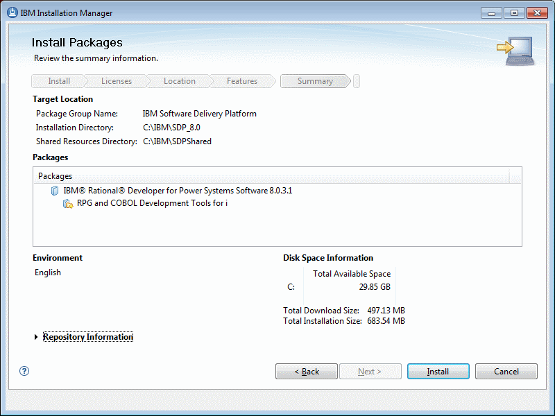
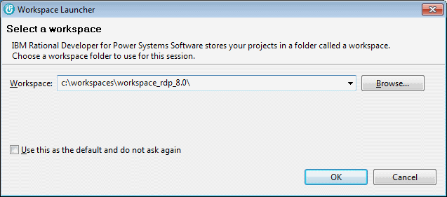
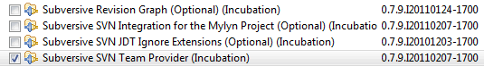
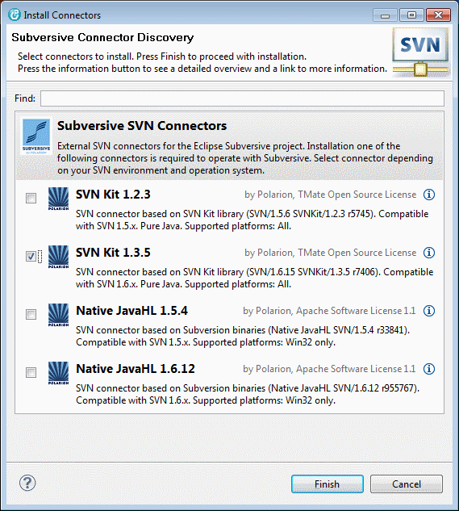
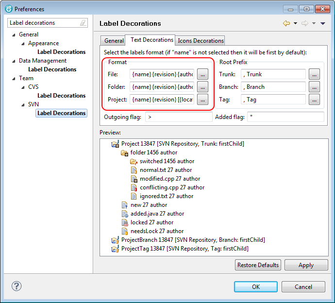
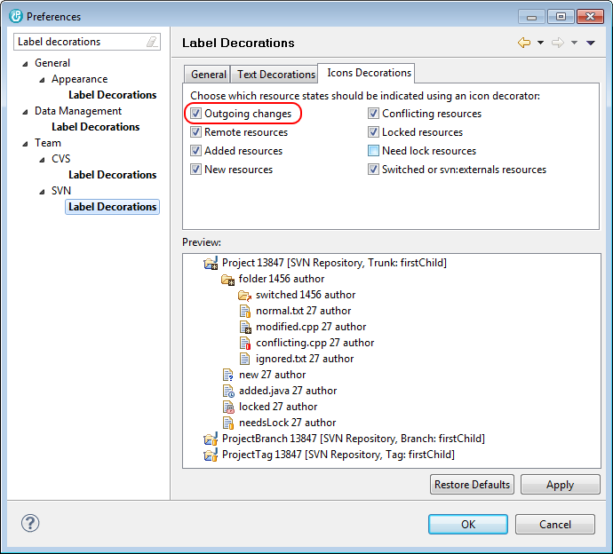

In order to work on iSphere you should have RDP 8.0 or higher and a copy of WDSCi 7.0. The reason for that is that we try to keep iSphere compatible to both product lines. Hence you need both products to test your functions.
The following steps describe how to setup an iSphere development environment for RDP 8.0. Most of the steps are identical with what to do for WDSCi 7.0. Differences are highlighted where necessary.
Start the installer from the RDP 8.0 installation disk and follow the steps of the install program. You may consider to install RDP in a directory different from the standard Windows "Program Files" folder, to avoid requiring administrator rights when installing plug-ins.
For example:
| Installation Manager: | C:\IBM\Installation Manager\eclipse |
| Shared Resources: | C:\IBM\SDPShared |
| Installation Folder: | C:\IBM\SDP_8.0 |
You do not necessarily install all the stuff. It is sufficient to install the "RPG- and COBOL Development Tools for i".

Eventually apply the license code to finish the basic installation of the Integrated development Environment (IDE).
Start RDP 8.0 and when it asks for a workspace, select a workspace near to the root directory in order to avoid problems with long file names:

Next you can install the SVN adapter to access the iSphere repository at SourceForge.
| WDSCi: You need to install the Subclipse SVN Team provider. You can download it from the iSphere repository at SourceForge. |
Select "Help -> Install New Software..." to open the "Install" dialog. Click "Available Software Sites" and enable the Eclipse Helios update site at: http://download.eclipse.org/releases/helios.
Open "Collaboration" and select the "Subversive SVN Team Provider":

After having restarted RDP, select "Window -> Preferences -> Team" and click "SVN". Select the "SVN Kit 1.3.5" and click "Finish" to install the SVN Adapter.

Confirm to install the "Subversive SVN Connectors" and "SVNKit 1.3.5 Implementation" plug-ins and click "Next". Restart RDP again.
The following settings are not required but may help to display the SVN status information more clearly:

| File | - | {name} {revision} {author} |
| Folder | - | {name} {revision} {author} |
| Project | - | {name} {revision} [{location_label}{root_prefix}: {first_branchOrTag_child}] |
Some of the above mentioned variables are not available for WDSCi. So for WDSCi you may want to set Project as shown below:
| Project | - | {name} {revision} [{label}] |
The following settings are not required but may help to display the SVN status information more clearly:
